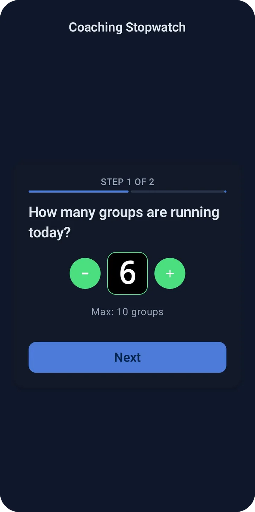
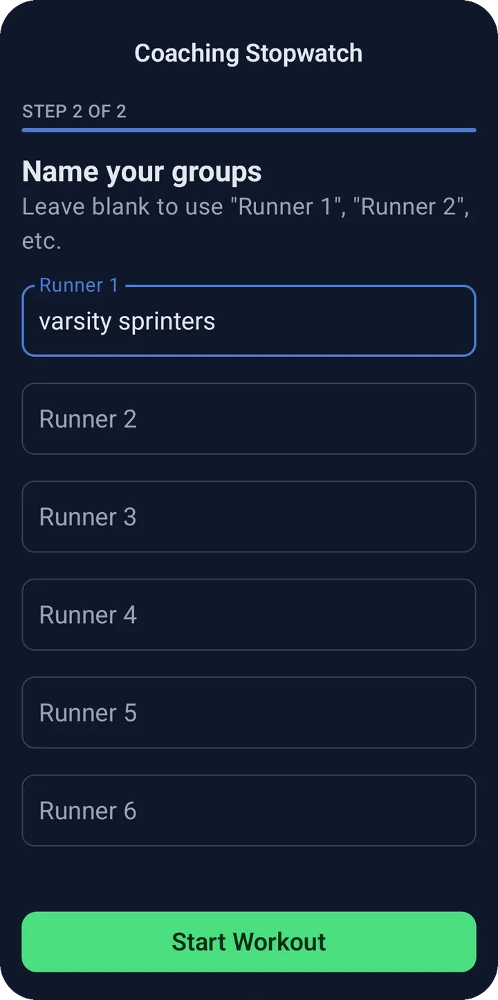
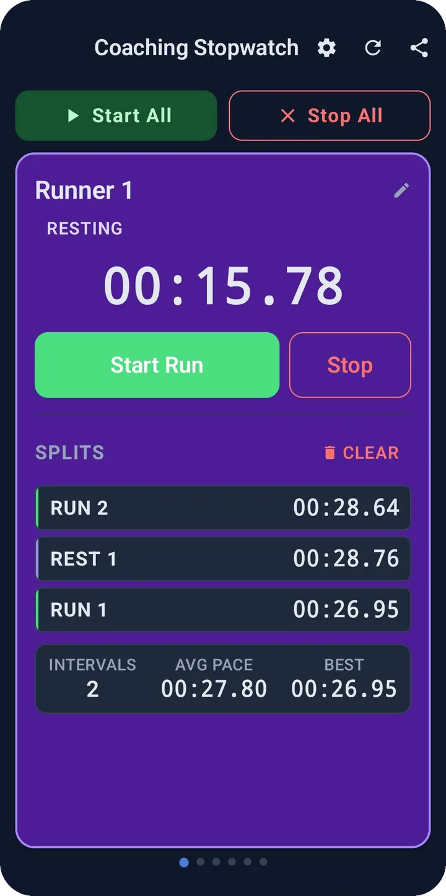

Coaching Stopwatch › How to use
How to use Coaching Stopwatch
A step-by-step guide to timing up to ten runners or groups on one phone or tablet: setting up, switching between run and rest intervals, reading your splits, and exporting the results to a CSV.
Quick start
- Open the app and choose how many groups are running (1 to 10), then tap Next.
- Name each group, or leave the fields blank, then tap Start Workout.
- Tap Start Run on a runner's timer when they go.
- Tap Start Rest when the rep ends, and Start Run again for the next one. Each switch saves a split.
- Tap Stop when that runner is done, then use the share icon to export a CSV.
Set up a session
Setup takes two screens and about ten seconds, so you can do it while the group is still stretching.

Choose how many groups are running
The first screen asks "How many groups are running today?" Use the minus and plus buttons to pick any number from 1 to 10, then tap Next.
A "group" can be a single athlete, a pair, or a whole heat. Coaching Stopwatch just gives each one its own independent timer.

Name your runners or groups
Type a label for each timer: "Varsity Sprinters," "Lane 3," or an athlete's name. Leave a field blank and it defaults to Runner 1, Runner 2, and so on. Tap Start Workout to open the timers.
You can rename any timer later by tapping the name at the top of its card.
Time run and rest intervals

Tap to switch, tap to save
Each runner has a big timer and two buttons. The large button always shows what happens next:
- Start Run begins a run interval from zero.
- Start Rest ends the run, saves it as a split, and immediately starts a rest timer from zero.
- Tap Start Run again to end the rest, save it, and start the next run.
- Stop saves the interval in progress and returns that runner to zero, ready for a fresh start.
What the status badge means
- Ready to Run
- The timer is at 00:00.00 and waiting. The button reads Start Run.
- Running
- A run interval is counting up and the card turns green. The button reads Start Rest.
- Resting
- A rest interval is counting up and the card turns purple. The button reads Start Run.
Tip: Intervals shorter than half a second are not saved, so an accidental double tap will not pollute a runner's split history.
Start everyone at once
Above the timers are two shared buttons. Start All starts every timer that is not already running, which is perfect for a mass start or a group time trial. Stop All stops every running timer and saves each one's current interval.
Every runner still keeps an independent timer, so after a shared start you can switch each one to rest at their own finish. Nothing has to stay in lockstep unless you want it to.
Read your splits and stats
Below the timer, each runner's saved intervals build up in a list, newest first, labeled RUN 1, REST 1, RUN 2, and so on. Once a runner has at least one saved run, a stats bar appears with three numbers:
- Intervals: how many run intervals have been recorded.
- Avg Pace: the average time across those run intervals.
- Best: the fastest single run interval.
Rest intervals are listed in the history but are not counted in these stats. To wipe one runner's history, tap Clear next to the splits heading. That only affects that runner.
Switch between runners
On a phone
One runner is shown at a time. Swipe left or right to move to the next timer. The row of dots under the card shows which runner you are on, and the list loops around from the last runner back to the first. Timers you are not looking at keep running.
On a tablet
On tablets and other wide screens, every timer appears at once in a grid, so you can watch and tap all of them without swiping.
Export your session to CSV
Tap the share icon in the top bar to create a CSV of the whole session. Android's share sheet opens so you can send the file by email, save it to Google Drive, or hand it to any app you like. The file is named with the date, for example Track Workout Session 9-25-2026.csv.
The first column is the interval label and there is one column per runner, so the results open cleanly in Excel or Google Sheets:
| Label | Varsity Sprinters | Lane 3 |
|---|---|---|
| Run 1 | 00:58.32 | 01:01.10 |
| Rest 1 | 01:30.05 | 01:29.88 |
| Run 2 | 00:57.94 | 01:00.47 |
If two runners' interval types do not line up on the same row, for instance because one was stopped and restarted, that row is labeled Interval N instead of Run or Rest so no column is mislabeled. Export before you end a session, because ending it discards the times.
Keep timing with the screen off
Timers keep running when you lock your phone or switch to another app. While any timer is active, Coaching Stopwatch shows a small ongoing notification so you know it is still live. On Android 13 and newer, the app asks for notification permission the first time you start a timer.
If the app is closed or restarted mid-workout, reopening it restores your runner names, saved splits, and any timers that were running, and they carry on counting from the correct elapsed time. A session is only restored if a timer was started or a split was recorded, so an empty setup never follows you around.
Reset, clear, or end a session
There are three ways to start over, each with a different reach:
- Clear
- On a runner's card, deletes only that runner's saved splits.
- Reset
- The circular-arrow icon in the top bar. After you confirm, it stops every timer and clears all splits, but keeps your runner names and group count.
- End session
- Settings, then "End session and start over." Discards everything and returns to the setup screen so you can pick a new group count.
The gear icon in the top bar also opens Settings, where you can choose a System, Light, or Dark appearance, read the legal documents, or rate the app.
Example workouts
Ideas for putting the timers to work at practice.
Interval repeats
Doing 400 m repeats with a set recovery? Tap Start All on the whistle, tap Start Rest as each runner finishes, and tap Start Run when their rest time is up. Every rep and recovery is saved.
Time trials
Line up the heat, tap Start All on the gun, then tap Stop on each runner's timer as they cross the line. Anyone who runs several reps also gets an automatic Best and Avg Pace.
Fartlek and pyramids
Alternate hard and easy segments by tapping between Start Run and Start Rest. The split list keeps the whole pattern in order for review after practice.
Circuits and stations
Give each station or team its own timer. Use the run timer for work periods and the rest timer for rotation, then export the CSV to compare groups.
Frequently asked questions
How many runners can I time at once?
Up to 10 independent timers in one session, each with its own run/rest state and split history.
Why didn't my split get saved?
Intervals of half a second or less are ignored so accidental taps do not create junk splits. Anything longer is saved when you switch to rest or run, or when you tap Stop.
Does tapping Stop delete my time?
No. Stop saves the interval that was in progress, then resets that runner's timer to zero. The saved time stays in the splits list and in your CSV export.
Can I change a runner's name after I start?
Yes. Tap the name at the top of the runner's card, edit it, and tap Save. If you clear the name it goes back to Runner 1, Runner 2, and so on.
Does it work without an internet connection or an account?
Yes. There is no sign-in and the app does not need a network connection to time your practice.
What if the export doesn't open?
If Android cannot create the file, the app shows a "Could not export session" message. Try again, and if it keeps happening, email support@coachingstopwatch.com and include your Android version.
Is Coaching Stopwatch free?
Yes. It is free to download, with no ads and no account required.
Ready to time your next practice?
Free download, no account required, and set up in seconds.